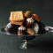

딸의 정부청사 출장에 부모님이 동행하는 이유 분이 많네요, 감사드립니다! 직장인(신입)으로 울릉도에서 근무하며 얻게 된 직장생활에 도움 되는... Apr 19. 2024 · by 은설 aka꿈꾸는 알
덴마크의 '꿀 하트' 쿠키, Honninghjerter 오늘날까지 같은 주소에서 영업 중이다. 덴마크의 여왕 잉그리드도 이 꿀케이크 제과점을 자주 찾는다... Nov 16. 2023 · by Windsbird
373 사진만 봐도 꿀과 윤기가 좌르르, 구움과자 롱블랙 3월 28일, 문장채집 no. 373 주방에서 아카데미 시작. 3. 커리큘럼이 특이. 수업 중 조리 기술을 배우는 시간은 극히 일부. 수강생... Mar 28. 2023 · by 백영선 플라잉웨일... 